Lebron James

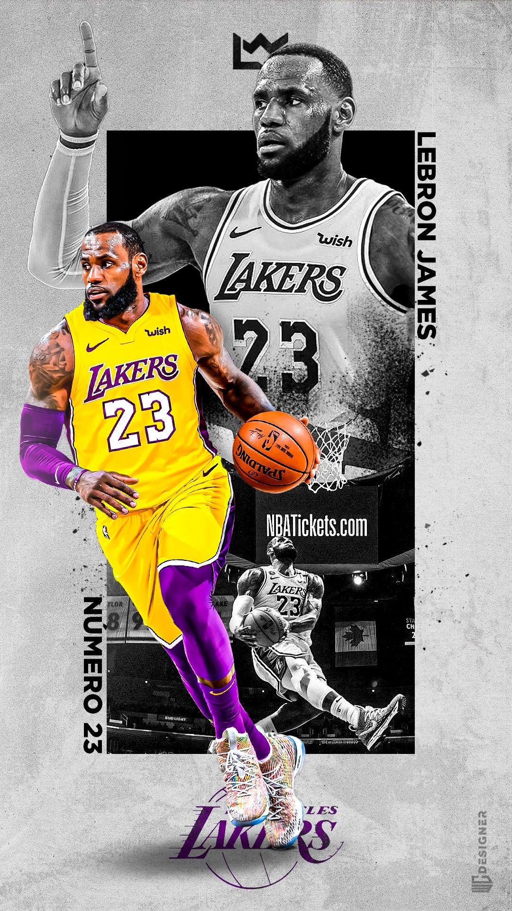
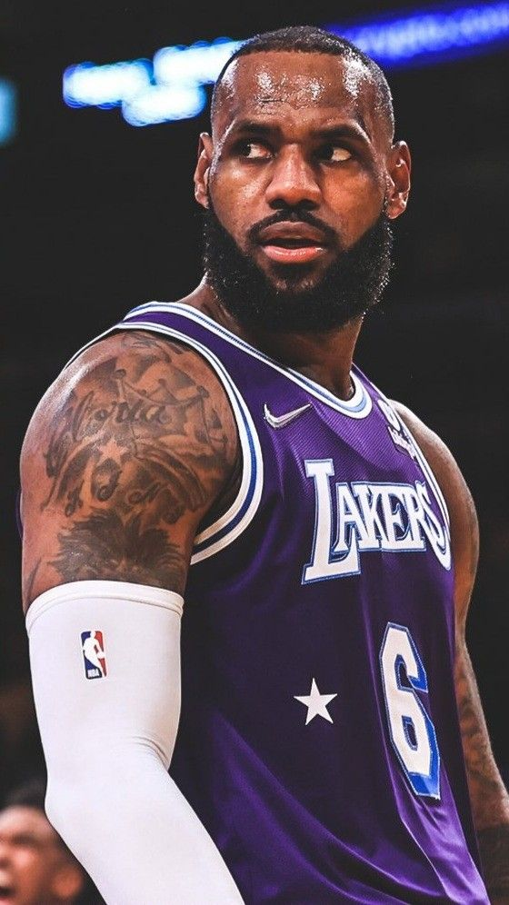
LeBron James est un joueur de basketball américain né le 30 décembre 1984. Il est considéré comme l’un des meilleurs joueurs de l’histoire de la NBA. Il est connu pour sa force, sa vision du jeu et sa capacité à marquer des points. Au cours de sa carrière, il a remporté plusieurs championnats NBA avec différentes équipes et a gagné de nombreux titres de meilleur joueur. LeBron James est aussi très influent en dehors du sport.
Stephen Curry
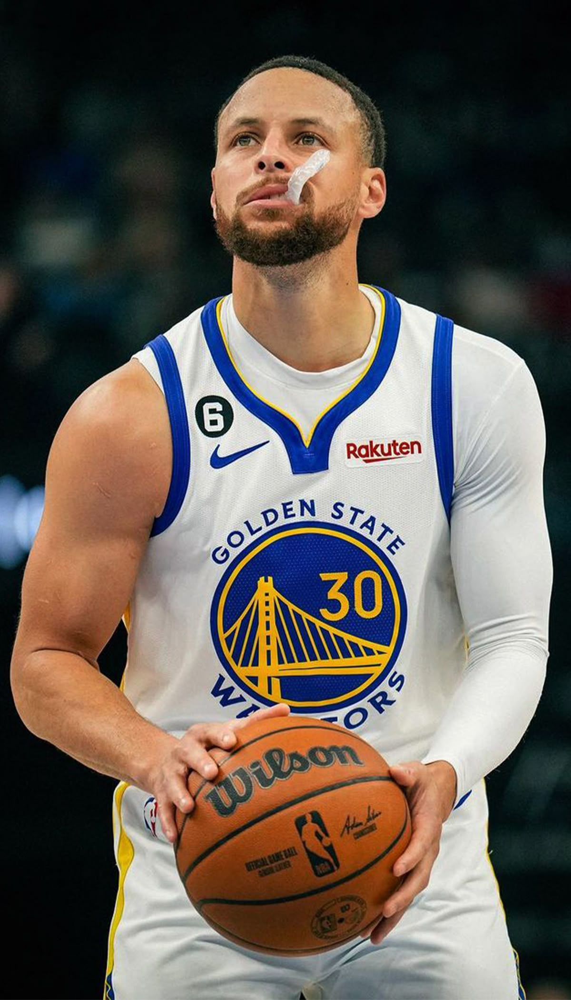
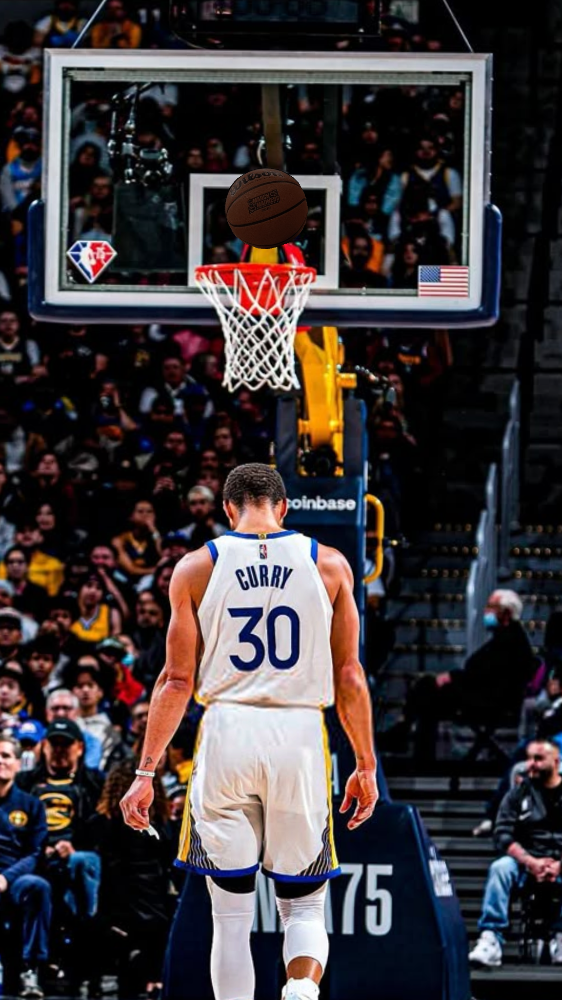
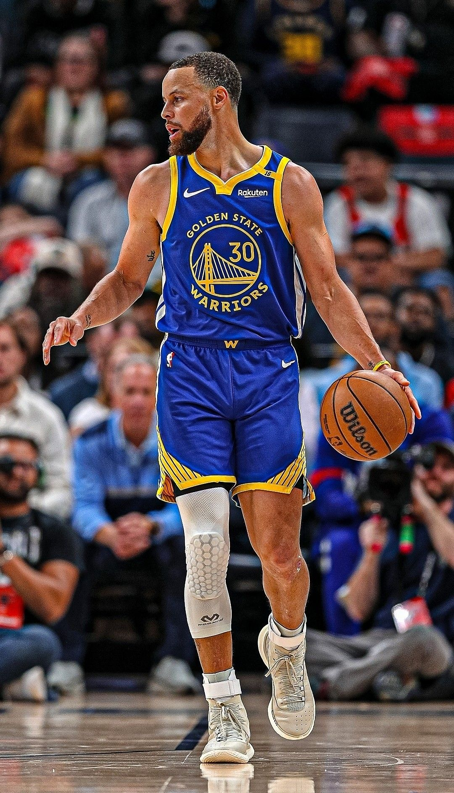
Stephen Curry est un joueur de basketball américain né le 14 mars 1988. Il joue en NBA avec l’équipe des Golden State Warriors. Il est connu pour son tir à trois points très précis et est considéré comme l’un des meilleurs tireurs de l’histoire du basketball. Stephen Curry a remporté plusieurs championnats NBA et est l’un des joueurs les plus célèbres au monde.
Kobe Bryant

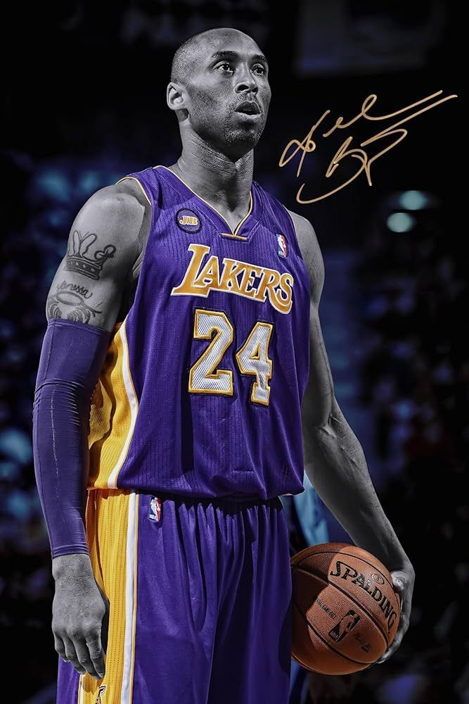
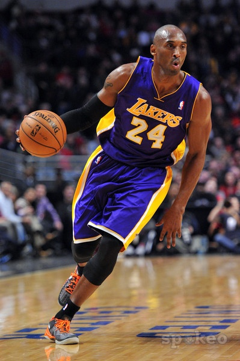
Kobe Bryant (1978–2020) est l’un des plus grands joueurs de l’histoire du basket-ball. Il a passé toute sa carrière (1996-2016) avec les Los Angeles Lakers en NBA, où il est devenu une légende pour son talent, son éthique de travail et sa mentalité compétitive appelée “Mamba Mentality”.
Shaquille O'Neal
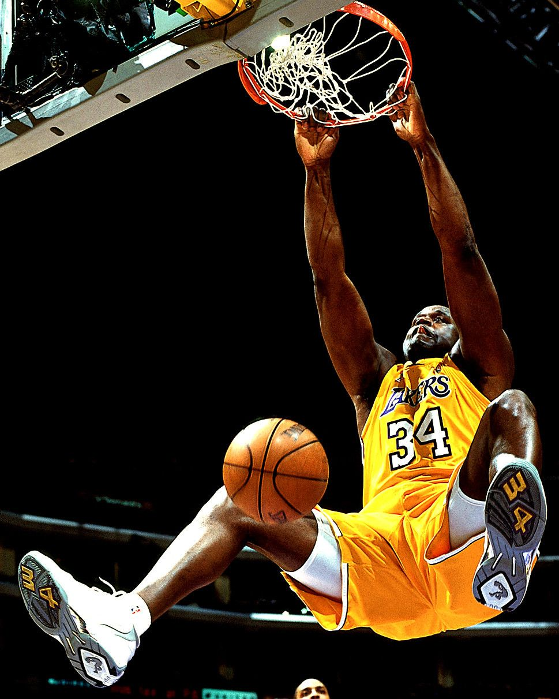
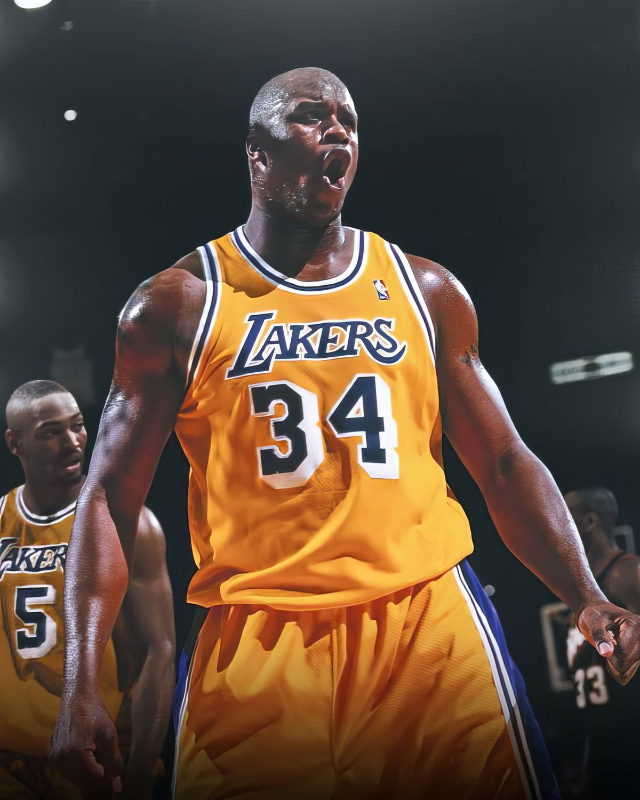
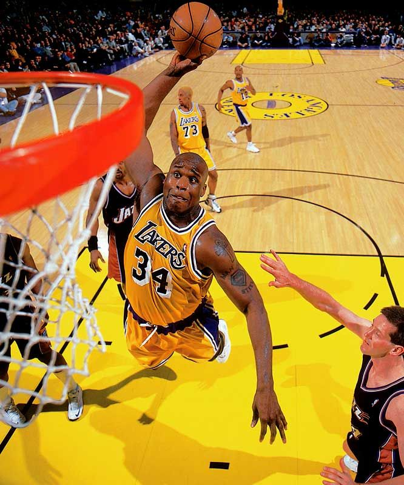
Shaquille O'Neal, surnommé Shaq, est l’un des pivots les plus dominants de l’histoire du basketball. Avec ses 2,16 m et sa puissance exceptionnelle, il était quasiment impossible à arrêter près du panier. Il a surtout brillé avec les Los Angeles Lakers, remportant trois titres consécutifs de 2000 à 2002 aux côtés de Kobe Bryant, et a gagné au total quatre championnats NBA. Après sa carrière, Shaq est devenu analyste TV, acteur et homme d’affaires, restant une figure emblématique du basket et du sport.
Luka Dončić
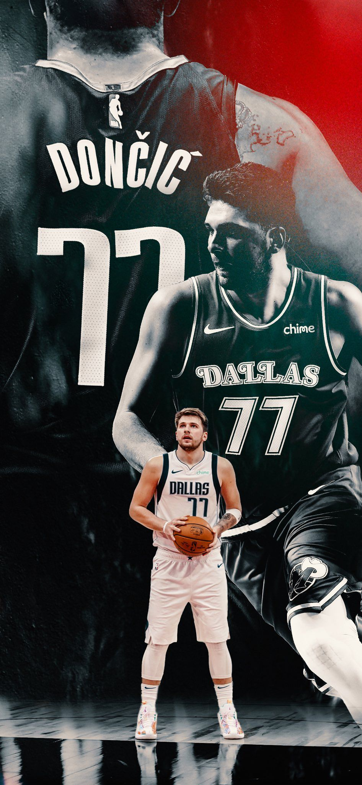
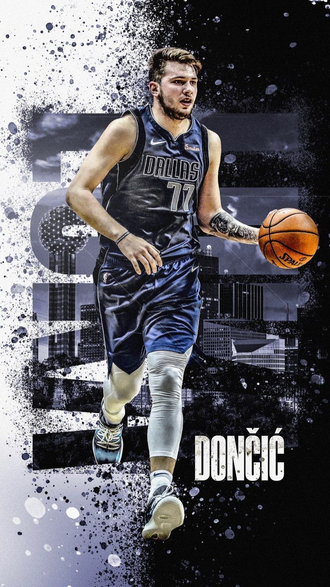
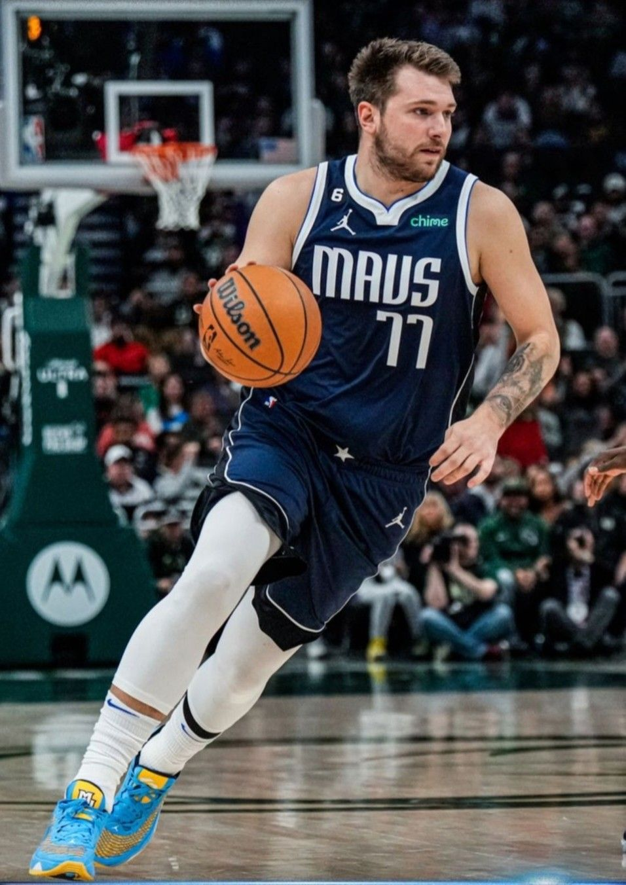
Luka Dončić est un joueur slovène des Dallas Mavericks, rapidement devenu une star de la NBA. Formé au Real Madrid, il est connu pour sa vision de jeu, sa capacité à marquer de n’importe où et son sang-froid. Souvent comparé à LeBron James, il est considéré comme l’un des jeunes talents les plus prometteurs de la ligue.